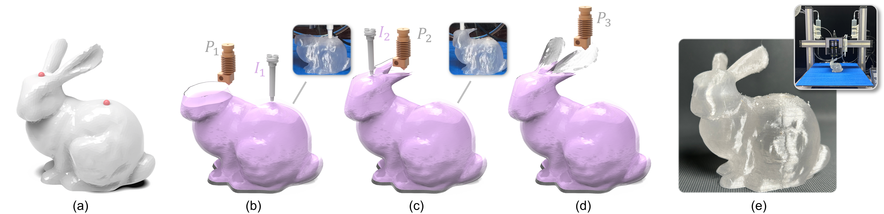
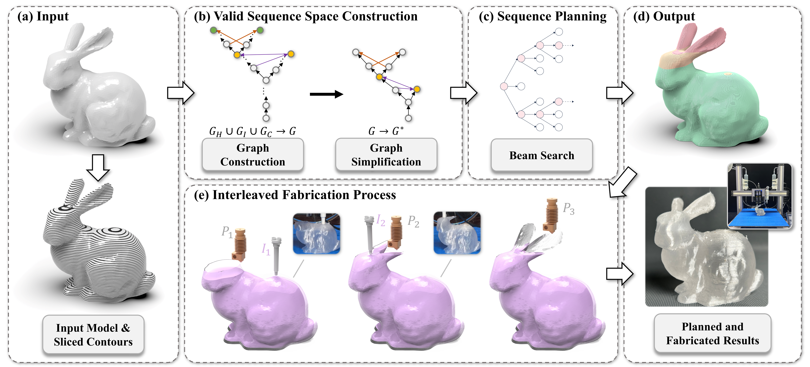
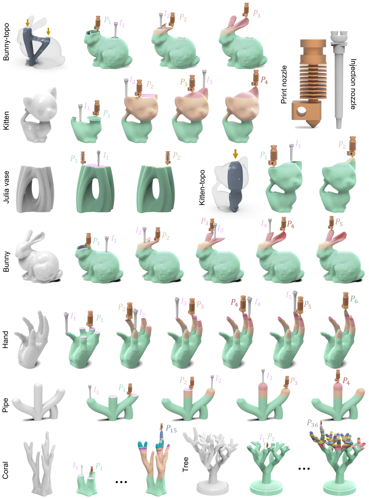
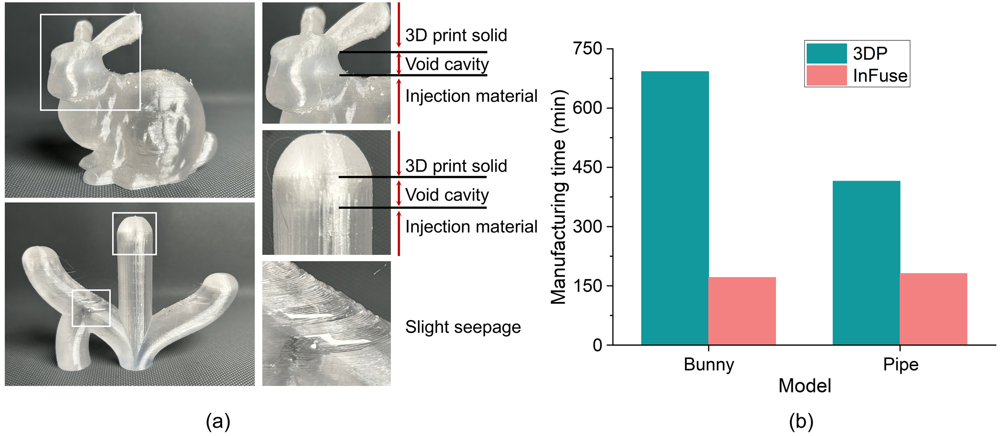
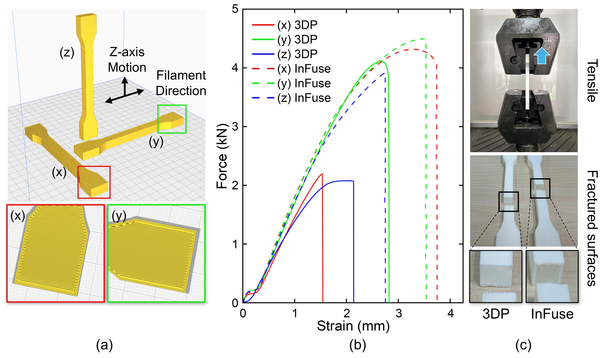
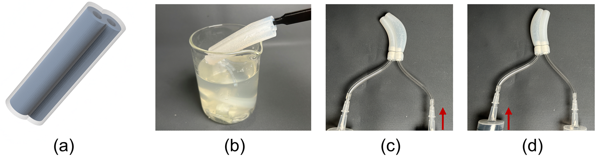
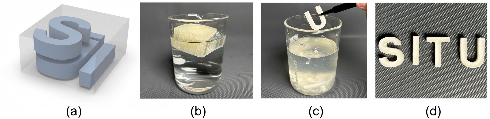
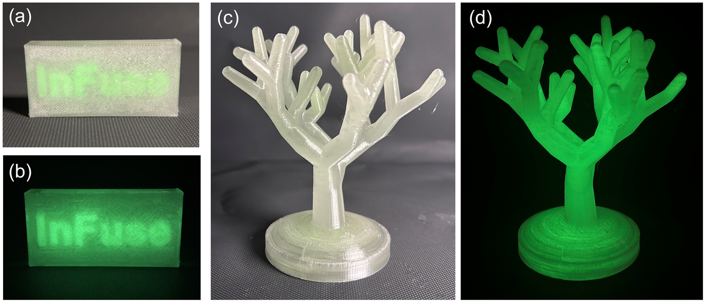

IEEE Transactions on Visualization and Computer Graphics, 2026.

Fig. 1. Overview of the proposed in-situ material injection and printing hybrid manufacturing framework. (a) Target model, where the red markers indicate injection locations automatically identified by the proposed algorithm. (b–d) In-situ material injection hybrid manufacturing process, which alternates between a printing step 𝑃_𝑖 and a subsequent injection step 𝐼_𝑖 . Through this iterative print–inject sequence, internal cavities are progressively filled and automatically sealed during fabrication, effectively preventing air entrapment and enabling fully automated manufacturing. (e) Final fabricated result and the customized in-situ printing–injection hybrid manufacturing platform used in our experiments.
Hybrid manufacturing that combines 3D printing with injection molding enables customized parts that integrate printed structures with injected materials, supporting complex geometries, soft or functional regions, and composite components. However, trapped air during material injection can block material flow and cause incomplete filling, making air evacuation a critical constraint. Existing printing-then-injection workflows typically rely on explicitly designed venting channels, which restrict geometric adaptability and increase design complexity. We present InFuse, a computational fabrication framework for in-situ printing and material injection on three-axis FDM platforms. Our key observation is that a connected injection cavity can be filled from a valid injection opening as long as air evacuation is preserved; thus, injection is only required at critical switching contours derived from the input geometry. InFuse formulates this process as an air-evacuation-aware sequence planning problem, encoding printing and injection feasibility constraints into a unified dependency graph and computing fabrication-efficient interleaved printing--injection sequences. We evaluate InFuse on diverse examples, including soft robotic components, artistic molds, and functional composite structures. Compared with standalone 3D printing, InFuse reduces fabrication time by up to 70% and produces parts with improved isotropy. These results demonstrate that air-evacuation-aware geometric reasoning enables efficient, vent-free fabrication of complex hybrid parts.

Fig. 2. Overview of the InFuse algorithmic pipeline. (a) Input 3D model and sliced contours. (b) Construction of the valid sequence space via dependency graphs and subsequent graph simplification. (c) Beam search is applied to compute a high-quality interleaved printing--injection sequence. (d) Planned sequence drives fabrication, producing both the simulated planned result and the physical printed object. (e) Interleaved fabrication process with sequential printing P_i and injection I_i stages.

Fig. 3. Gallery of results generated using InFuse. From topology-optimized parts to intricate branching structures, InFuse plans when to print and when to inject while keeping air-escape paths open. These sequences span nine diverse geometries, showing how the same planning framework adapts to different cavity layouts and geometric complexities.

Fig. 4. Physical fabrication performance. The Bunny and Pipe prototypes validate the planned sequences on a modified desktop 3D printer, without manual sealing or auxiliary flow channels. Replacing time-consuming printed solid infill with material injection reduces total fabrication time by up to 70% compared with conventional 3D printing with solid infill.

Fig. 5. Anisotropy evaluation. In tensile tests across three build orientations, the strength drop from the strongest to the weakest orientation falls from about 51% for fully 3D-printed specimens to 11.4% for InFuse specimens. Fracture surfaces also reveal lower porosity in the injected infill, providing further evidence of improved material uniformity.

Fig. 6. Pneumatic soft actuator fabricated using InFuse. Combining a water-soluble PVA mold with injected silicone produces a flexible actuator with functional internal chambers. After the mold dissolves, selectively inflating the chambers bends the actuator left or right, demonstrating bidirectional pneumatic actuation.

Fig. 7. Demonstration of sacrificial mold manufacturing using InFuse. InFuse fills separate cavities as the sacrificial PVA mold is printed, removing the need to reserve auxiliary flow channels between parts. This enables tighter packing and reduces mold material use; dissolving the mold in water releases the finished cast objects.

Fig. 8. Demonstration of the artistic fabrication. InFuse combines printed shells with fluorescent infill to create sealed artistic objects without auxiliary channels. The branching Tree example coordinates 35 injection points, demonstrating repeated printing and injection while preserving air evacuation through a complex structure.